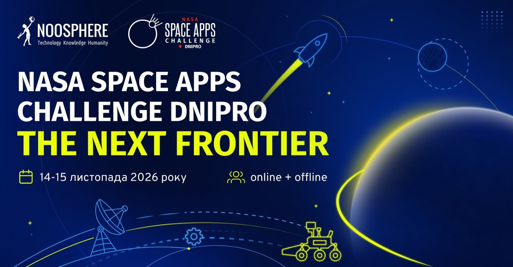

Найбільший у світі космічний хакатон знову в Україні!


@noosphere.initiatives вдесяте проводить NASA Space Apps Challenge й знову запрошує до участі всіх любителів космосу й технологій
NASA Space Apps Challenge – це найбільший міжнародний космічний хакатон, який щороку проходить під егідою NASA у різних країнах. Десятки тисяч ентузіастів космосу й технологій зі всього світу об'єднуються в команди і протягом 48 годин вирішують одне з запропонованих завдань та створюють власний проєкт.
Для кого? Студенти, аналітики, науковці, програмісти, дизайнери, письменники, мейкери, інженери, розробники, біологи, навіть музиканти й художники!
Коли? 14-15 листопада 2026 року
Формат: online+offline на базі локацій @noosphere.engineering в різних містах
Участь безоплатна!
Як долучитися?
зареєструватися на сайті хакатону spaceappschallenge.org/2026/local-events/dnipro й обрати локацію Dnipro
сформувати команду або приєднатися до вже створеної
обрати одне із завдань й виконати його
представити готовий проєкт локальному журі
За попередні 9 років проведення хакатону локальний етап об’єднав тисячі учасників, а команди неодноразово потрапляли до числа найкращих у світі: у 2017 році команда Spacer увійшла до топ-10 у номінації People's Choice, у 2020 році FireWay перемогла у номінації Best Use of Technology. NEXT SPACE LAB у 2022 році та Craft Lab у 2024 році увійшли до списку Global Finalists Honorable Mentions. Торік локація NASA Space Apps Challenge Dnipro стала найбільшою в Європі, об’єднавши понад 430 учасників.
Ставайте частиною хакатону і ви!
Джерело: спільнота ліцею у Facebook.